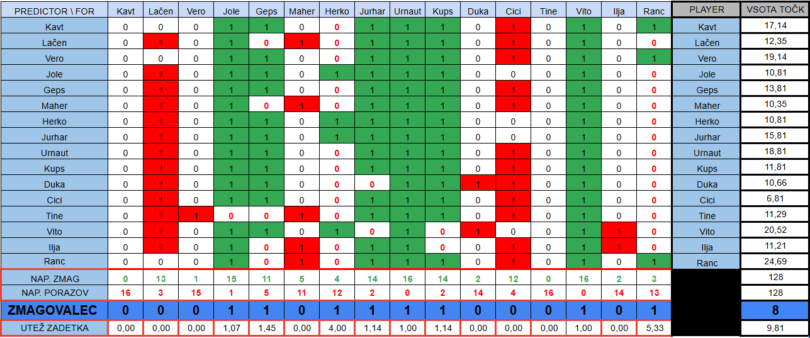
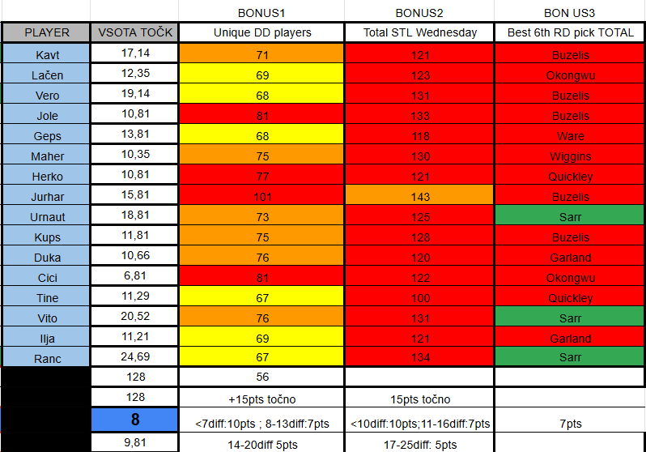
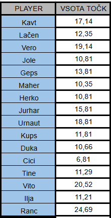

MATCHUP 15 (Jan 26 - Feb 1)

Bonus questions:
BONUS1: Koliko različnih igralcev bo zabeležilo double double ta teden? [lestvica [5-15pts]
BONUS2: Koliko bo ukradenih žog na sredinih tekmah? [lestvica 5-15pts]
BONUS3: Kateri 6th round pick bo imel največ total points ta teden? [+7pts]

TOP3 of the weeek:
1st: Vid Ranc (+24,69pts) [+1%]
2nd: Vito Torej (+20,52pts) [+1%]
3rd: Rok Verčko (+19,14pts) [peč v hrbet]
